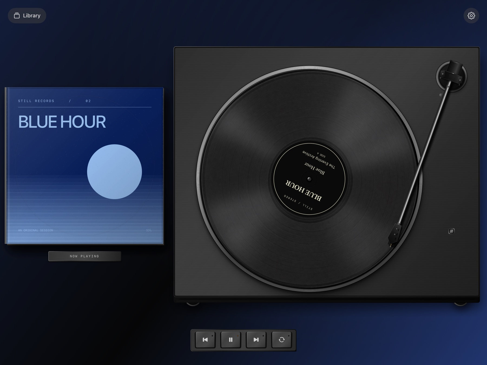
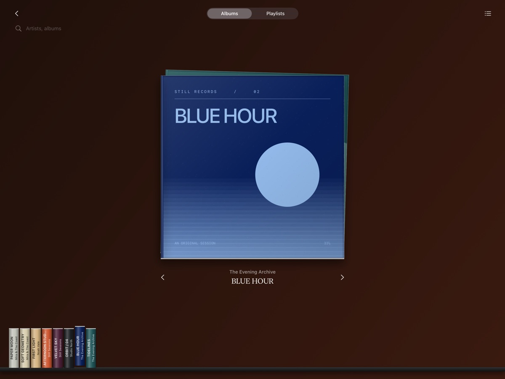
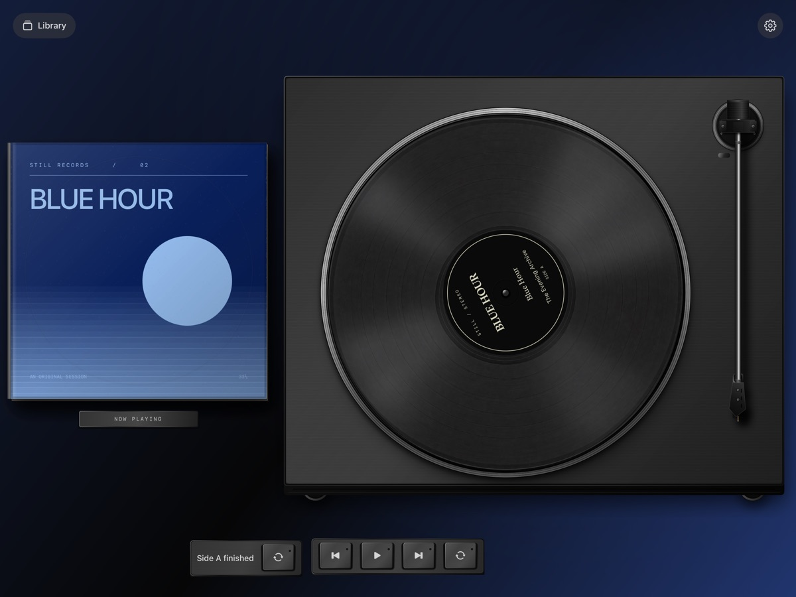
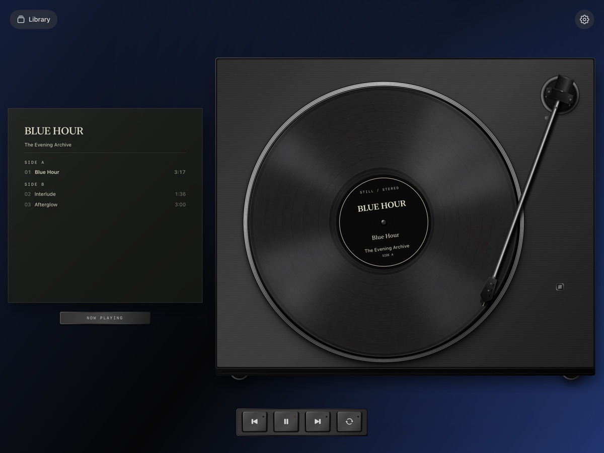
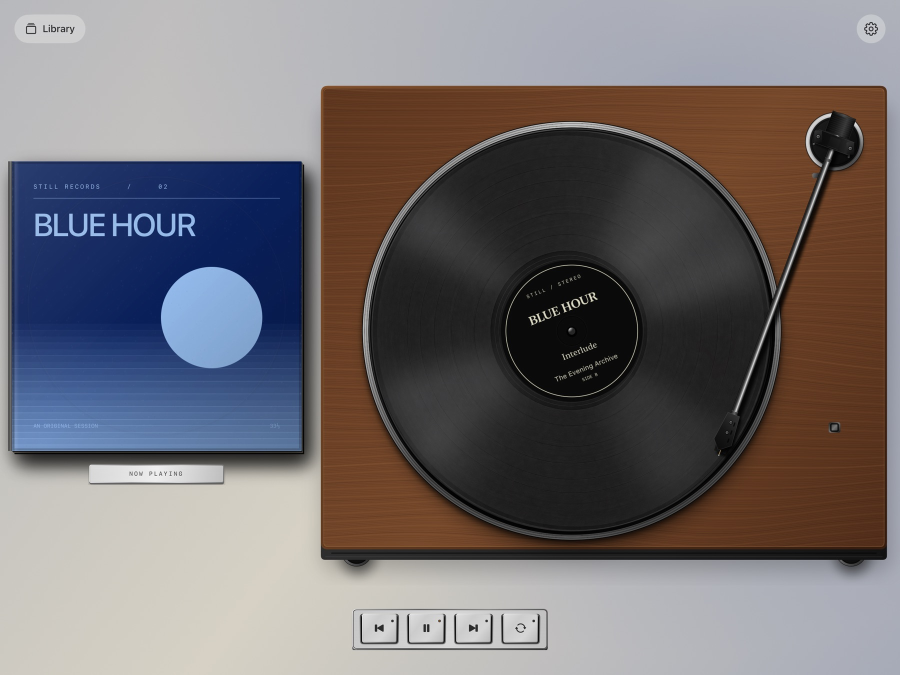

FOR iPAD
still.
The music on your iPad,
on a record player.
Slide the record out of its sleeve, drop the needle and listen to side A. When it ends, turn it over. An app for hearing albums from the first song to the last.

- 01
Drop the needle
Carry the needle to the edge of the record and the song begins after a moment of groove noise. Set it down midway to start from there.
- 02
Side A, side B
Albums are split into two sides between songs and stop at the end of each. Turn the record over to keep going.
- 03
A record shelf
Your Music library becomes a shelf of spines. Turn a sleeve over to see its track list.



Choose your room
A night room or a bright one, and a Modern or Walnut deck. That is the only setting.
